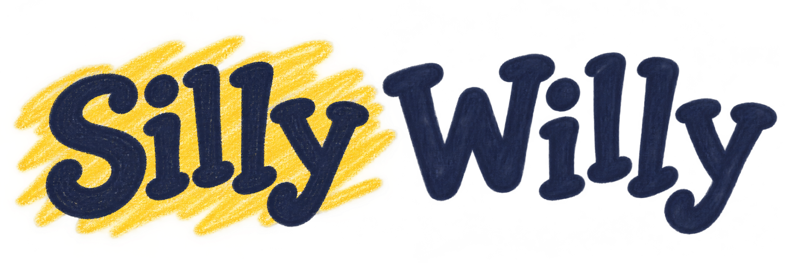
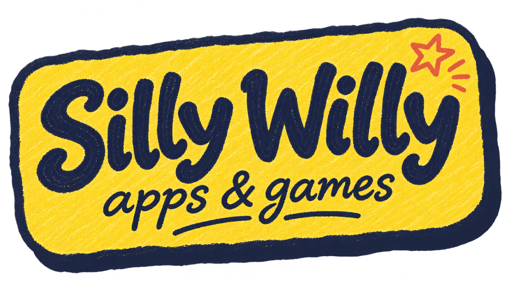
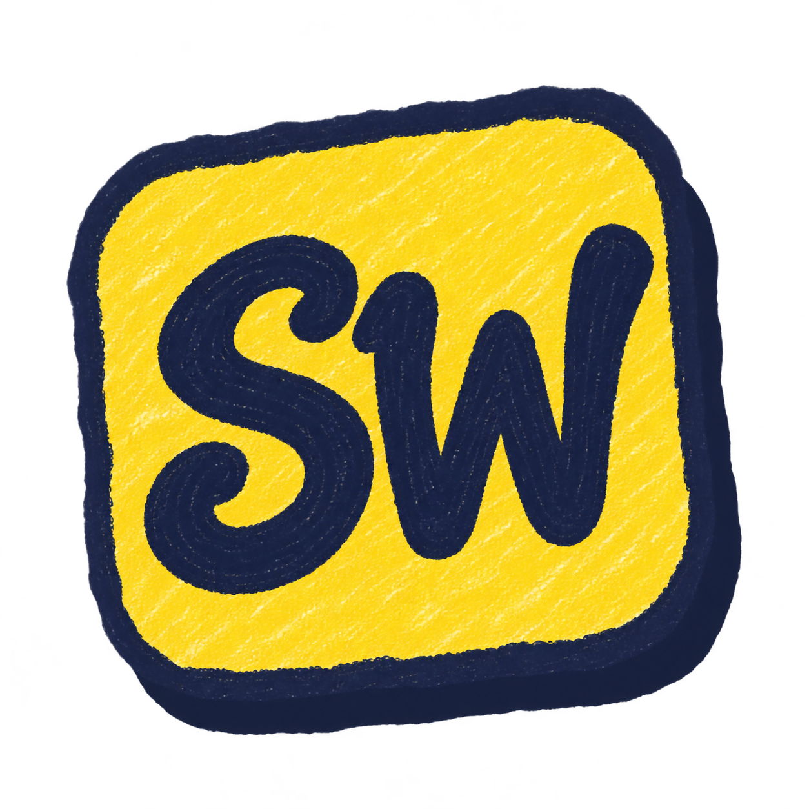

Why Silly Willy exists
Remember when games had a beginning and an end, and nothing cluttered the screen? Silly Willy Apps makes fun, clean, useful apps and games like that, after hours, just for the joy of it.
By day I'm a software engineer in education technology. At night I get to follow my own ideas without the process that big projects need. It's a hobby, not a movement. If someone out there enjoys what I made, that's the whole point.
The promise: No ads. Just fun things I like making.
Small optional purchases (like extra energy) and pay-once games are fine. Ads never are.
The logo system
Two pieces that work as a pair: a calm wordmark, and a playful sticker. Each logo below is a code mockup until the ChatGPT art is saved in brand/logo/, when the real file shows up here on its own.

Silly WillyWordmark
A soft, chunky serif whose letters won't stay in line, with a yellow crayon scribble behind "Silly". The grown-up one.
- Website header, blog, email signature
- The "a Silly Willy app" stamp on each app's pages
- Anywhere it needs to sit calmly next to words
- Dark backgrounds (the scribble fringes; use the sticker)
- Tiny sizes (use the monogram)
- Adding "Apps" to it: the domain already says that

Silly Willyapps & games
Sticker
Hand lettering on a crooked, hand-cut yellow badge with a chunky navy shadow. The playful one.
- Social avatars, link previews, merch, dark backgrounds
- Slightly tilted, as if slapped on a folder
- Straightened, recoloured or stretched
- On a busy photo with no plain space around it

SWMonogram
"SW" on a small sticker for tight spaces.
- Favicon, profile pictures, watermark corners
- Replacing the full name where there's room for it
The app stamp
Each app keeps its own look. Silly Willy only shows up as a small stamp: the wordmark between "a" and "app", linking to sillywillyapps.com. It goes in the footer of the app's web pages, at the bottom of a store listing, or in the credits.
Live example: the footer of dogstories.sillywillyapps.com. Keep it on a light background. In plain text, it reads: Dog Stories · a Silly Willy app
Colours
#1F2A44Text, outlines, shadows
#FFD84DThe main colour: scribbles, stickers
#E8604CSmall accents, buttons. Not for small text on cream
#FBF6EABackgrounds, like a sheet of paper
Type
Headings. A soft, slightly wonky serif. Free on Google Fonts.
Body text and buttons. Clean and easy to read. Free on Google Fonts.
Tiny handwritten notes only ("new!", a signature). Never paragraphs.
How Silly Willy sounds
Like a friendly engineer telling you about a weekend project. Warm, a bit self-mocking, never snarky, never salesy. Short sentences. Fine for a kid to read.
- Joke about yourself, never about the player
- Say "I", not "we": it's one person making these
- Words like "ultimate", "epic" or "revolutionary"
- Body-part jokes about the name. Let the rhyme be the joke
Taglines to try
- Apps & games, the way they used to be — fun.
- Seriously un-serious apps.
- Made after hours, made with joy.
- No ads. Just fun things I like making.
Pick one for the website. The others can show up in blog posts and store listings.
About Me (draft)
Hi, I'm Paul.
I grew up with games that had a beginning and an end. You played them, you finished them, and nothing popped up in the middle asking you to buy a season pass.
By day I'm a software engineer in education technology. It's work I care about. But big projects come with a lot of process, and sometimes an idea just wants to be built on a Tuesday night.
That's what Silly Willy is: the apps and games I make after hours, because I want them to exist. No ads, ever. Some have a small optional purchase; some you just buy once and play it all.
If you've played one of them, thank you. Really. That's the best part.
— Paul